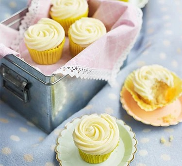

Vanilla Cupcakes

Description
A recipe for vanilla cupcakes from BBC Good Food
Ingredients
- 110g butter, softened
- 110g golden caster sugar
- 2 eggs
- 1 tsp vanilla extract
- 110g self-raising flour
- 1-2 tbsp milk
Steps
-
Heat oven to 180C/160C fan/gas 4. Line 12 holes in a shallow muffin tin with cupcake cases (not muffin cases). Cream the butter and sugar together until the mixture is light and fluffy. Beat the eggs and vanilla in a jug, then beat into the butter mixture a little at a time.
-
Fold the flour into the mixture along with a little milk – the mixture should fall easily off a spoon. Divide the mixture between the cases, filling each one no more than half full.
-
Cook the cakes for 12-15 mins – they should be firm to the touch and slightly golden brown. Cool in the tin for 5 mins, then lift them out gently and leave to cool completely.
Back